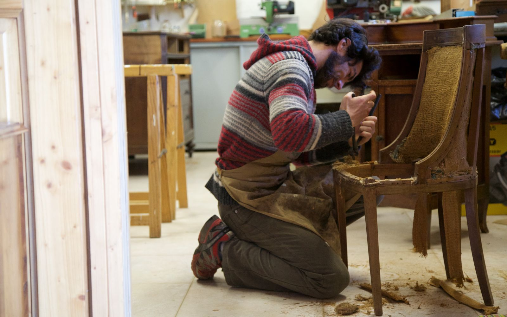
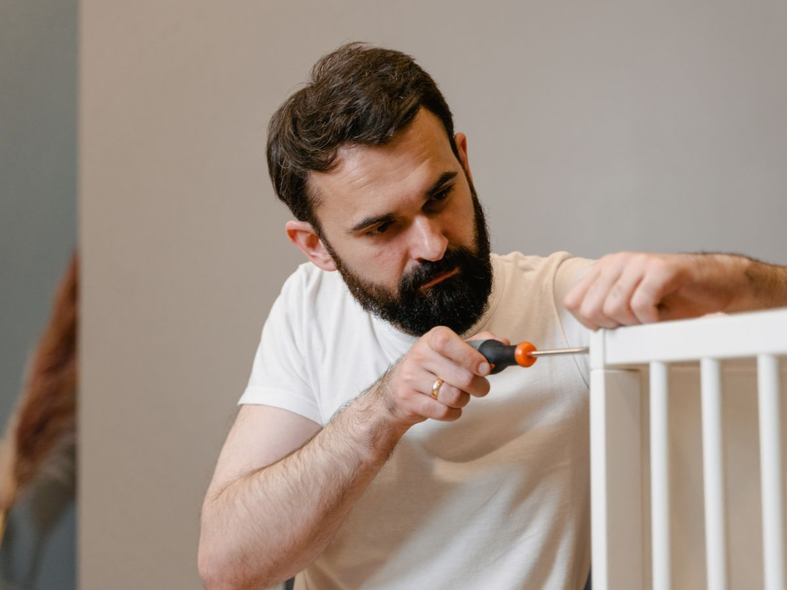
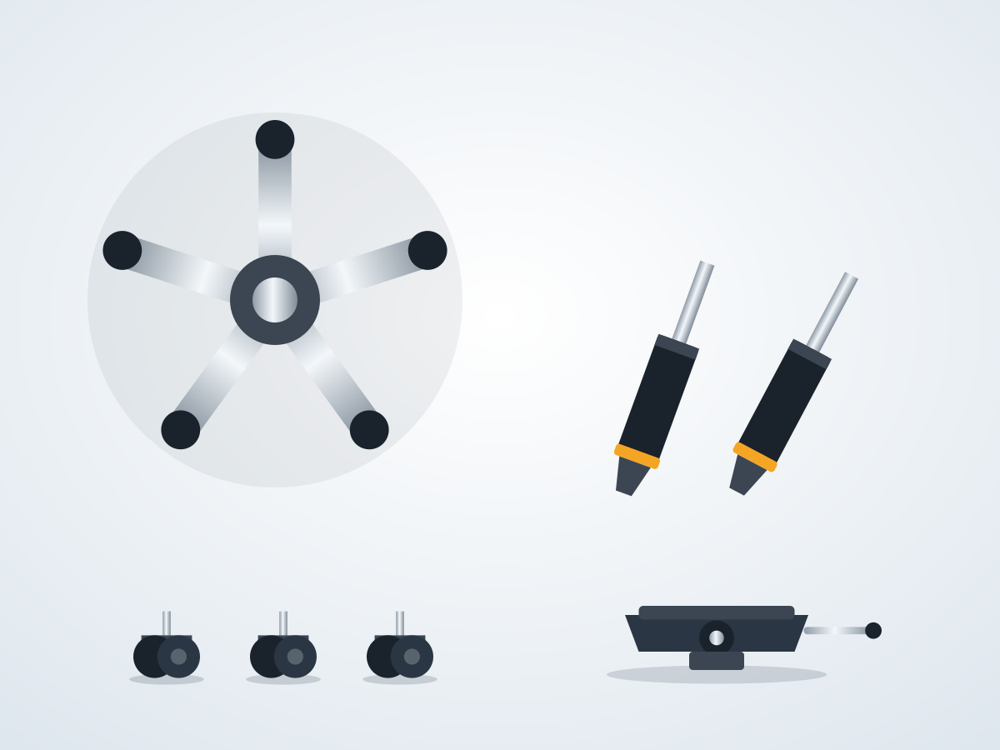

Broken chairs fixed on-site, one chair or a whole office
We replace gas lifts, wheels, bases, armrests, mechanisms, foam and upholstery at your premises. Most repairs are done the same day.

Every part of the chair, fixed properly
Tell us the problem or send a photo. We bring the right spare part with us.
Gas lift / cylinder
Chair sinking or not adjusting height? We replace the gas lift with a certified class-3 or class-4 cylinder.
Wheels & castors
Broken, stuck or floor-scratching wheels replaced with nylon or PU castors.
Base / star base
Cracked plastic or bent metal bases replaced with nylon or chrome bases.
Tilt mechanism
Tilt lock, tension knob and synchro mechanism repaired or replaced.
Armrests
Loose, cracked or missing armrests replaced with fixed or adjustable arms.
Foam & upholstery
New foam, fabric, leatherette or mesh. Your colour, your choice.

Inspect, quote per chair, repair in batches
- Free inspection: each chair is tagged and its problem recorded.
- Itemised quotation showing the price per part and per chair.
- Repair in batches of 20-50 chairs, on-site or at our workshop.
- Before and after photos of every repaired chair.
- 90-day warranty on all replaced parts.

Repair costs 30-40% of a new chair
Most office chairs have a strong frame that lasts 10+ years. Usually only the moving parts and the fabric wear out. Replacing just those parts gives you a like-new chair for a fraction of the price.
Chair repair questions
Do you repair chairs at our office?
Yes. Most repairs (gas lift, wheels, base, arms, mechanism) are done on-site. Full re-upholstery may be done at our workshop, with pickup and drop included.
How long does it take?
A single chair usually takes 15-30 minutes. For bulk work we plan batches so 50-100 chairs can be completed in a day.
Do you repair all brands?
Yes. We repair all branded and unbranded office chairs. We carry standard-size parts that fit most chairs.
Is there a warranty?
All replaced parts carry a 90-day warranty against manufacturing defects.